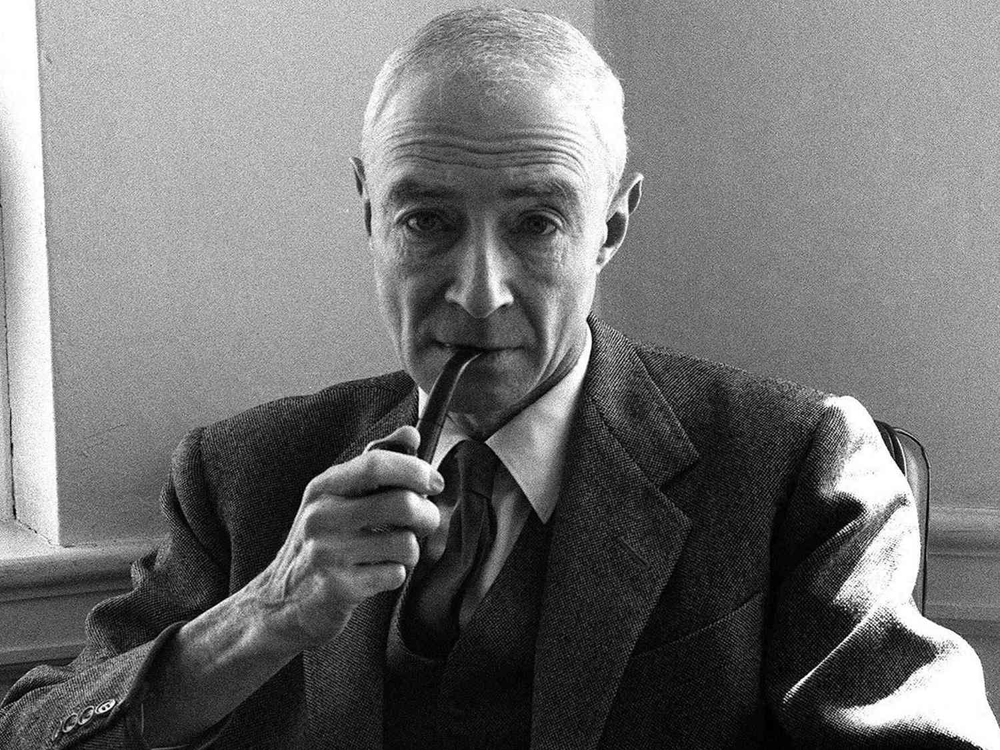

/
| Inicio | Logros | Galeria | Contacto |
| Susu logros | |||
|  | |||
J. Robert Oppenheimer was an American theoretical physicist who became the scientific leader of the Manhattan Project, the United States’ secret effort to build nuclear weapons during World War II. He directed the main laboratory at Los Alamos, where he coordinated thousands of scientists in designing the first atomic bombs. Under his leadership, the team created both the uranium and plutonium bomb designs used in 1945. In July 1945, Oppenheimer oversaw the Trinity Test, the first detonation of a nuclear device in history. Witnessing the explosion, he recalled a verse from the Bhagavad Gita: “Now I am become Death, the destroyer of worlds.” The success of this test proved that nuclear weapons were possible and directly led to their use in Hiroshima and Nagasaki, which helped end World War II but introduced the world to the destructive power of atomic warfare. After the war, Oppenheimer became a major public figure and played an important role in debates about nuclear policy. He argued for international control of atomic weapons and opposed building the hydrogen bomb, which led to political conflict during the Cold War. In 1954, amid fears about communism, the U.S. government revoked his security clearance, damaging his career. Despite this, he remains a central figure in the history of science and the ethics of technological power. |
|||